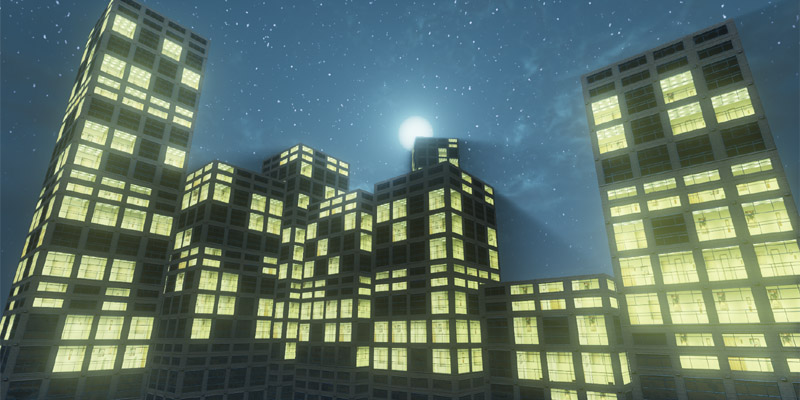
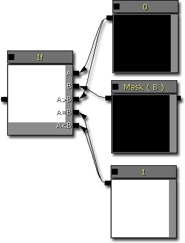
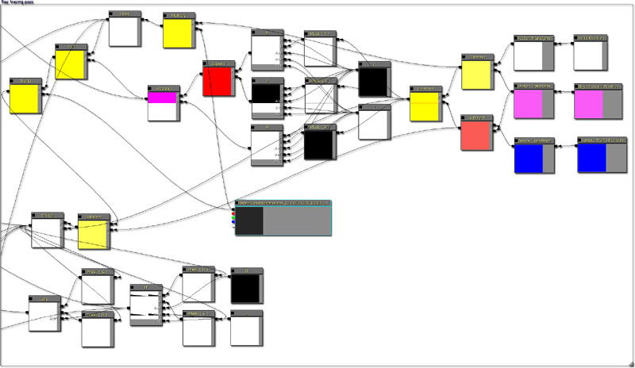
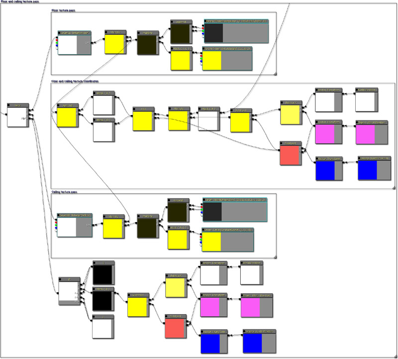
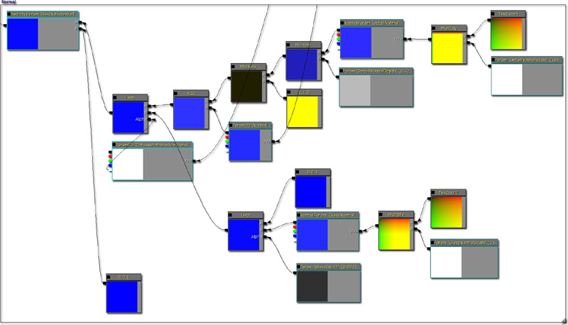
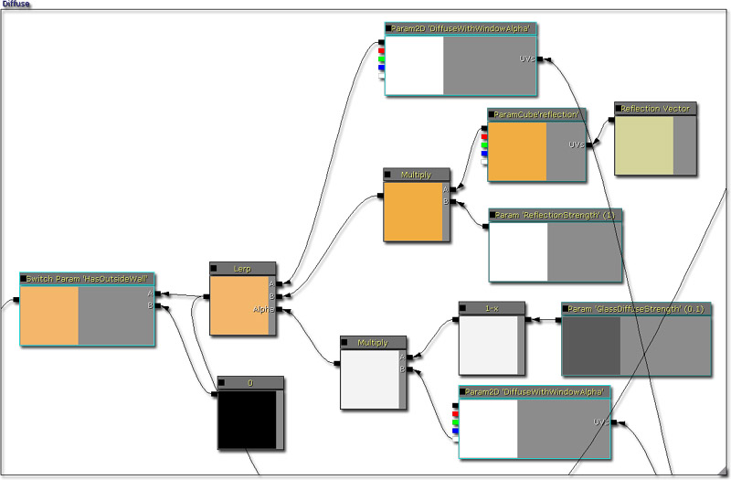
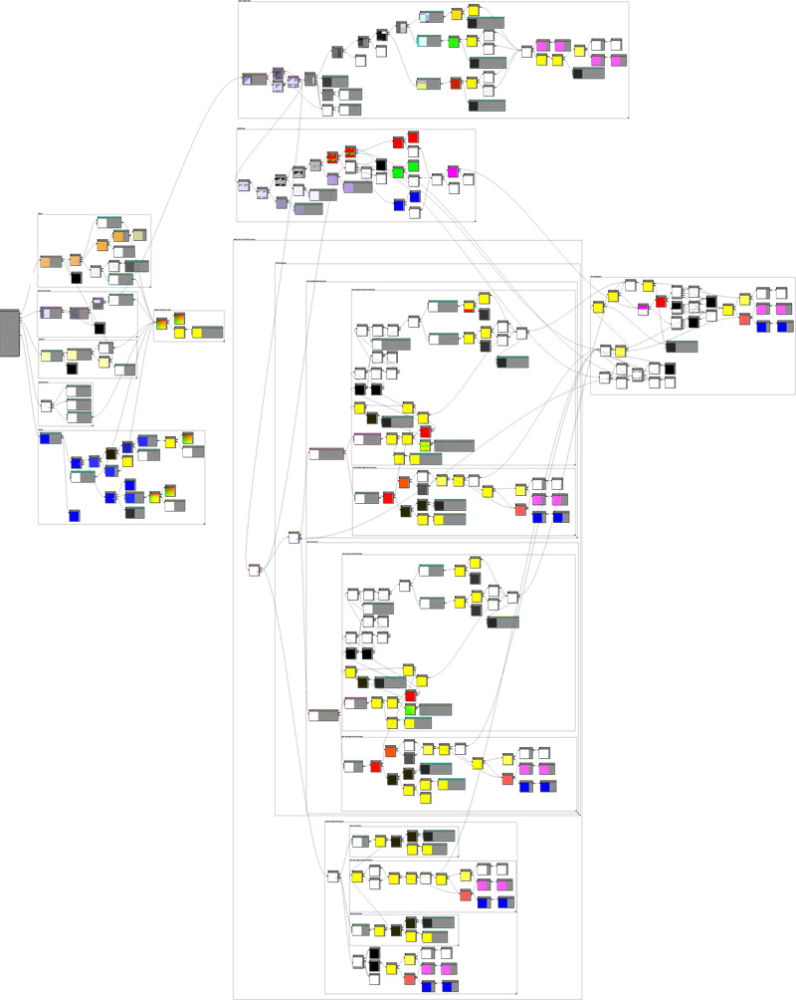

UDN
Search public documentation:
DevelopmentKitGemsInteriorMappingCH
English Translation
日本語訳
한국어
Interested in the Unreal Engine?
Visit the Unreal Technology site.
Looking for jobs and company info?
Check out the Epic games site.
Questions about support via UDN?
Contact the UDN Staff
日本語訳
한국어
Interested in the Unreal Engine?
Visit the Unreal Technology site.
Looking for jobs and company info?
Check out the Epic games site.
Questions about support via UDN?
Contact the UDN Staff
UE3 主页 > 虚幻开发工具包精华文章 > 内部贴图
内部贴图
于 2011 年 8 月对 UDK 进行最后测试
可以与 PC 兼容
概述

内部贴图是由 Joost van Dongen 开发的一项技术。在这里可以找到原始文档资料。内部贴图是一项可以在平面上创建视觉透视正确经过贴图处理的房间技术。这项技术可以改善建筑，这样您就可以快速向您的场景添加建筑，不需要花费很多时间为所有的内部建模。通过使用贴图同时扩展这个材质，您还可以将动态响应加入中白天到晚上过渡或在可视墙壁和/或地面上使用具有动画效果的贴图。构建材质
该材质在 van Dongen 编写的 Cg 程序基础上进行构建。但是扩展并平移了一些 CG 指定指令，这样可以使用 UDK 指定命令。这样的函数示例是 step 函数。它在 UDK 中的生成过程如下所示。

可以将诸如此类的 Cg 函数创建为材质函数。光线追踪渲染
与视差角度遮挡贴图技术非常相近，该技术也可以使用光线追踪查找在渲染材质表面时使用的贴图坐标。所有 Vector Transform（向量转换）从 World（世界坐标值）转换为 Local（本地坐标值）。光线追踪渲染的进行过程如下所示：
顶棚和地面贴图渲染
进行光线追踪之后，下一步是顶棚和地面贴图渲染。因为顶棚和地面同时具有同一个贴图坐标，这个坐标由贴图像素是否相对于相机低于水平线来决定是否进行渲染。
墙壁贴图渲染
在这个材质中有两种类型的墙壁，其中一种是 X 轴，另一个种是 Y 轴。这两种类型的贴图计算是相同的，只是根据使用的光线投射交集贴图坐标不同。有两种不同的贴图计算类型可供关卡设计师使用。其中一种方法使用的是贴图组合方法，可以随机选取要使用的墙壁贴图，这种方法性能消耗相对高一些，但是视觉效果更加生动。另一种方法相对来说简单一些，因为它只是对每个墙壁使用一个单独的贴图。
光照渲染
光照渲染只包含构建三个面的法线贴图，然后使用静态光源方向计算这个点积。添加乘数参数和其他参数，这样关卡设计师可以进一步调整光照。
光源变体渲染
光源变体渲染会为每个房间生成一个噪点样本。使用阙值后，您可以通过它打开或关闭光源。它允许您创建其他变体，这样建筑物可能会看上去更生动形象。使用不同的阙值可以使您在不同的密度具有不同的光源或者可以具有其他光照效果，例如，闪烁光源。
法线渲染
对外面的墙壁使用法线渲染，这样您可以像任何其他材质一样进行设置。其中包括玻璃反射的详细法线贴图和法线参数。这样可以提供一个摇摆不定的反射，而不是一个完美的反射。
高光和高光次幂渲染
对外面的墙壁使用高光和高光次幂渲染，这样您可以像任何其他材质一样进行设置。已经设置完成，砖块的高光次幂值比窗户高一点。
自发光和内部渲染
使用自发光渲染对顶棚和地面、墙壁、光照和光照变体渲染生成的内部进行渲染。如果您想要释放一个贴图取样器，那么您也要对外面的墙壁使用自发光贴图。
漫反射渲染
对外面的墙壁使用漫反射渲染，所以您可以像任何其他材质一样进行设置。
漫反射、高光和法线贴图缩放器
漫反射、高光和法线贴图缩放器可以允许关卡设计师缩放贴图，这样它们才能与 RoomDimension 设置的房间数匹配。
完整的材质
将它集合成整体，然后您会得到一个材质，如下所示。
材质参数
下面是一个参数及其用途的列表。
- BackWallTextureScale - 它允许您缩放其中一个墙壁贴图坐标。
- CeilingTextureScale - 它允许您缩放顶棚贴图坐标。
- FloorTextureScale - 它允许您缩放地面贴图坐标。
- LeftAndRightWallTextureScale - 它允许您缩放其中一个墙壁贴图坐标。
- LightColorAddition - 它允许您与整个光照结果相加。如果光源值超出 1.f，那么将超出的部分发送给光溢出因数。
- LightColorMultiplier - 它允许您与整个光照结果相乘。如果光源值超出 1.f，那么将超出的部分发送给光溢出因数。
- LightParameterA - 它可以定义内部光源方向。
- MaxLightColor - 它是光源结果的最大颜色。
- MinLightColor - 它是光照结果的最小颜色。
- OutsideWallTextureScale - 它允许您缩放外面的墙壁贴图。
- RoomDimensions - 它允许您调整房间的大小。如果房间比较小，那么将要创建更多的房间。
- BackTextureAtlasMagicConstantA - 在使用贴图组合对齐贴图坐标的时候调整这个神奇的常量。
- BackTextureAtlasMagicConstantB - 在使用贴图组合对齐贴图坐标的时候调整这个神奇的常量。
- DetailNormalDepth - 它允许您调整细分法线的深度。值越高，细分法线越明显。
- DetailNormalScale - 它允许您调整细分法线的缩放情况。
- DiffuseSpecularPower - 它允许您调整漫反射高光次幂值。
- GlassDepth - 它允许您调整玻璃法线的强度，使发射光线弯曲大一点或小一点。
- GlassDiffuseStrength - 它允许您调整玻璃漫反射的强度。
- GlassNormalScale - 它允许您缩放玻璃法线。
- InteriorLightingVariationTextureScale - 它允许您调整内部光照变体贴图缩放情况。
- LeftAndRightWallTextureAtlasMagicConstantA - 在使用贴图组合对齐贴图坐标的时候调整这个神奇的常量。
- LeftAndRightWallTextureAtlasMagicConstantB - 在使用贴图组合对齐贴图坐标的时候调整这个神奇的常量。
- LightVariationThreshold - 它允许您根据噪点变体渲染调整阙值，无论光源是出于打开还是关闭状态。
- ReflectionStrength - 它允许您调整发射的强度。
- SpecularMultiplier - 它允许您增加高光的强度。
- WindowSpecularPower - 它允许您调整窗户的高光次幂。
- DetailNormal - 这是供细分法线使用的贴图。
- DiffuseWithWindowAlpha - 这是供外面的墙壁使用的贴图。将 alpha 通道作为窗户和外部墙壁所在区域的蒙板使用。
- GlassNormal - 这是供玻璃法线使用的贴图。
- InteriorBackWall - 这是供其中一个墙壁使用的贴图。
- InteriorBackWallAtlas - 这是在使用贴图组合通道的时候供其中一个墙壁使用的贴图。
- InteriorBackWallVariation - 这是供不同贴图组合使用的贴图。
- InteriorCeiling - 这是供顶棚使用的贴图。
- InteriorFloor - 这是供地面使用的贴图。
- InteriorLeftAndRightWall - 这是公其中一个墙壁使用的贴图。
- InteriorLeftAndRightWallAtlas - 这是在使用贴图组合通道的时候供其中一个墙壁使用的贴图。
- InteriorLeftAndRightWallVariation - 这是供不同贴图组合使用的贴图。
- InteriorLightingVariation - 这是供不同光照使用的贴图。
- Normal - 这是供法线使用的贴图。
- Reflection - 这是供反射使用的立方体地图贴图。
- Specular - 这是供高光使用的贴图。
- Has Light Variations - 用于控制材质是否使用的是光源变体渲染的开关。
- Has Interior - 用于控制材质是否使用的是内部渲染的开关。
- Has Outside Wall - 用于控制材质是否使用的是 Diffuse（漫反射）、Specular（高光）、Specular Power（高光次幂）和 Normal（法线）渲染的开关。
- Has Specular Texture - 用于控制材质是否为高光使用贴图的开关。
- Use Texture Atlas For Back Wall - 用于控制材质是否使用的是贴图组合渲染的开关。
- Use Texture Atlas for Left And Right Wall - 用于控制材质是否使用的是贴图组合渲染的开关。
比较屏幕截图
下面是一个内部映射的屏幕截图。创建完内部房间后，会向场景中添加更多细节，只需要很少的额外处理即可。
 下面是一个没有内部映射的屏幕截图。可以使用光源变体渲染打开一些光源，但是它仍然不会真正地添加内部映射所添加的必要深度。
下面是一个没有内部映射的屏幕截图。可以使用光源变体渲染打开一些光源，但是它仍然不会真正地添加内部映射所添加的必要深度。

下载
- 下载该开发工具包精华文章中使用的内容。

{kind=link}
{kind=link}
{kind=link}
{kind=link}
{kind=link}